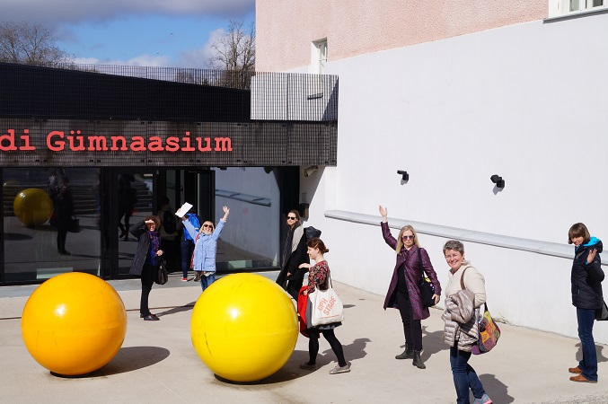
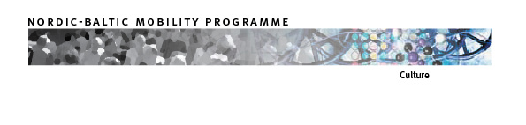

Diskusija notiek Baltijas un Ziemeļvalstu sadarbības tīkla “The Writing Movement Network” radošās laboratorijas un starptautiskā laikmetīgās dejas festivāla “Laiks dejot” ietvaros. Tajā piedalīsies horeogrāfi Frančesko Skaveta (Norvēģija), Renē Nommiks (Igaunija) un Olga Žitluhina (Latvija), kā arī “The Writing Movement Network” pārstāves, dejas kritiķes Seselja Magnusdotira (Islande), Moa Matilda Sālina (Zviedrija), Kamma Sīgumfelda (Norvēģija) un Inta Balode (Latvija). Uz diskusiju aicināts ikviens interesents, tā notiks angļu valodā.
Kā būt ietekmīgam dejā? Par varu, naudu, mārketingu, talantu, izklaidi, dzimumiem, nacionālajām un reģionālajām īpatnībām
“The Writing Movement Network” radošajā laboratorijā Rīgā tiksies un strādās dejas kritiķi no sešām valstīm – Zviedrijas, Dānijas, Islandes, Igaunijas, Baltkrievijas un Latvijas. Šīs laboratorijas centrālā tēma ir vara, ietekme un hierarhija dejā, īpaši akcentējot arī jautājumu par kritiķa varas pozīciju. Vai tāda maz ir un vai tā tiek izmantota?
Laboratorijas dalībnieki apmeklēs un analizēs festivāla “Laiks dejot” izrādes, iesaistīsies kolektīvās rakstīšanas sesijās, analizēs tekstus, kā arī piedalīsies praktiskās dejas nodarbībās. Tiks rakstītas un publicētas tradicionālas un netradicionālas formas ekspresrecenzijas par festivāla izrādēm.
Baltijas-Ziemeļvalstu sadarbības tīkls “The Writing Movement Network” sākās 2012. gadā projekta “kedja Writing Movement” ietvaros, kad vadošā organizācija bija Oslo Dejas māja. Kopš 2015. gada sadarbības tīkla koordinators ir “Dance.lv Žurnāls” (Latvija), un šī būs jau ceturtā un noslēdzošā cikla radošā laboratorija. Projekts noslēgsies jūnija beigās un tā ietvaros tapušie teksti būs pieejami interneta vietnēs JOURNAL.DANCE.LV un WRITING MOVEMENT. “The Writing Movement Network” tālāko vadību no Latvijas pārņems Dānija un Zviedrija.
Tīklu atbalsta Ziemeļvalstu un Baltijas valstu mobilitātes programma „Kultūra”, Valsts Kultūrkapitāla fonds, starptautiskais festivāls “Laiks dejot”, Zveidrijas kino un skatuves mākslu asociācija (Teaterförbundet)
Papildu informācija:
Maija Uzula-Petrovska
“Laiks dejot” sabiedrisko attiecību vadītāja
+371 29631741

